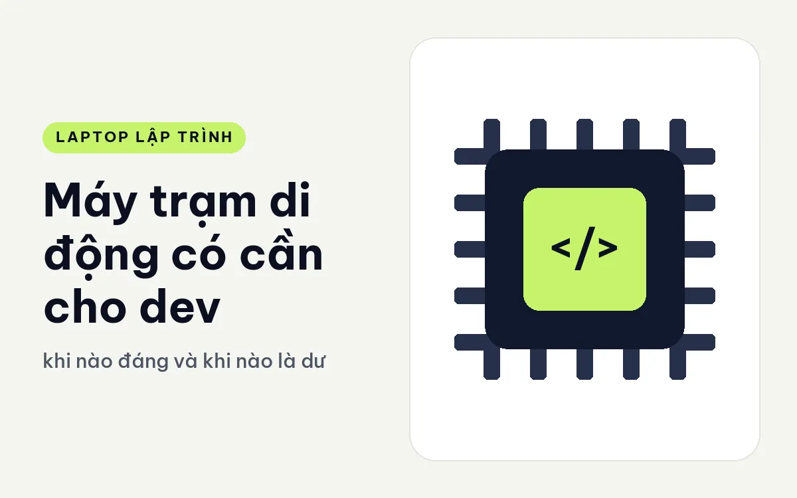
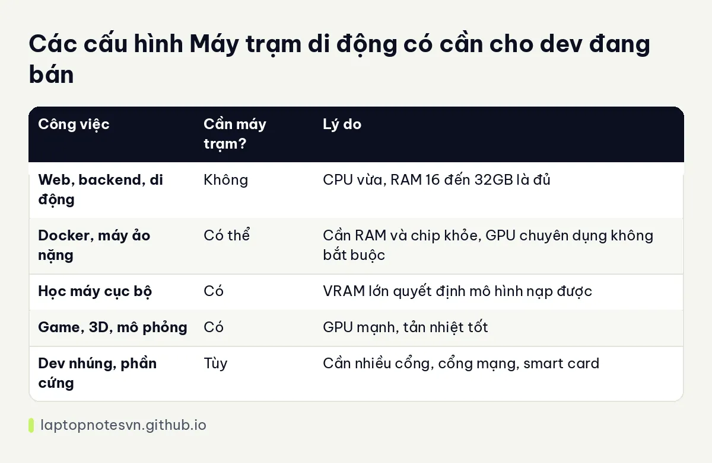

Máy trạm di động có cần cho dev - khi nào đáng và khi nào là dư

Dòng máy trạm di động thường được giới thiệu với chip mạnh, card đồ họa chuyên dụng, RAM lớn và độ bền cao. Nghe rất hấp dẫn, nhưng với người viết code thông thường nó nặng, đắt và dư sức. Câu hỏi đúng không phải máy trạm có tốt hay không, mà là công việc của bạn có cần mức đó hay không.
Bài này giải thích máy trạm di động khác laptop thường thế nào, nhóm dev nào được lợi, nhóm nào chỉ nặng thêm, rồi áp vào các máy đang bán. Mọi nhận định về từng máy chỉ lấy từ thông số công bố.
Máy trạm di động khác gì laptop thường
Điểm đầu tiên là phần cứng. Máy trạm thường dùng chip hiệu năng cao, card đồ họa dòng chuyên nghiệp có VRAM lớn, tản nhiệt rộng để giữ xung ổn định lâu. RAM thường nhiều và nhiều dòng cho phép nâng tới dung lượng rất lớn.
Điểm thứ hai là độ tin cậy và khả năng mở rộng. Máy có nhiều cổng, cổng mạng nhanh, đầu đọc thẻ, đôi khi có smart card, cùng các lựa chọn bảo hành doanh nghiệp. Hãng thường kiểm chứng máy với một số phần mềm chuyên nghiệp, nên người làm kỹ thuật hay thiết kế yên tâm hơn.
Điểm thứ ba là cái giá phải trả: máy nặng hơn, dày hơn, củ sạc to hơn, pin thường tụt nhanh khi chạy nặng. Thân máy lớn nên mang đi mỗi ngày là việc đáng cân nhắc.
Dev nào được lợi, dev nào không
Được lợi rõ rệt: người làm học máy chạy cục bộ, dev game có cảnh lớn, người làm đồ họa 3D hoặc mô phỏng, dev nhúng cần nhiều cổng, người xử lý dữ liệu lớn. Với họ, GPU và RAM lớn quyết định công việc có làm được hay không.
Ít được lợi: dev web, backend, ứng dụng di động, người viết script. Công việc của họ chạy tốt trên máy mỏng cấu hình vừa, và phần tiền chênh lệch dành cho máy trạm có thể dùng tốt hơn ở màn hình ngoài hoặc ghế ngồi.
Có một nhóm ở giữa: người chạy nhiều máy ảo và container, hoặc làm việc với hệ thống rất lớn. Họ cần RAM nhiều và chip khỏe nhưng không nhất thiết cần card chuyên dụng. Với họ, máy hiệu năng cao không cần thuộc dòng máy trạm cũng được. Phần chọn RAM nằm trong lập trình viên cần bao nhiêu RAM.
Câu hỏi nên tự trả lời trước khi mua
Công việc nào của bạn hiện đang bị máy cũ cản trở: chờ build, hết RAM, hay thiếu VRAM? Nếu không có việc cụ thể bị cản, máy trạm chưa chắc cần. Bạn có hay mang máy đi không? Nếu có, trọng lượng trên 2 kg sẽ thấy nặng sau vài tuần. Bạn có thể dùng máy chủ hoặc dịch vụ đám mây cho phần nặng không? Nếu có, laptop mỏng và thuê tài nguyên ngoài có thể kinh tế hơn.
Các điểm chính dạng bảng

| Công việc | Cần máy trạm? | Lý do |
|---|---|---|
| Web, backend, di động | Không | CPU vừa, RAM 16 đến 32GB là đủ |
| Docker, máy ảo nặng | Có thể | Cần RAM và chip khỏe, GPU chuyên dụng không bắt buộc |
| Học máy cục bộ | Có | VRAM lớn quyết định mô hình nạp được |
| Game, 3D, mô phỏng | Có | GPU mạnh, tản nhiệt tốt |
| Dev nhúng, phần cứng | Tùy | Cần nhiều cổng, cổng mạng, smart card |
Chi phí sở hữu và vòng đời máy
Máy trạm có vòng đời dài hơn laptop thường nếu bạn chăm sóc đúng. Linh kiện chắc chắn, tản nhiệt dư, nhiều model cho phép thay RAM và ổ, nên dùng được nhiều năm. Nếu tính chi phí theo từng năm sử dụng, mức chênh lệch lúc mua có khi không còn lớn như nghĩ.
Nhưng điều đó chỉ đúng khi công việc của bạn dùng hết sức máy. Nếu bạn chỉ khai thác một phần nhỏ năng lực, bạn đang trả tiền cho thứ mình không dùng. Một máy mỏng cấu hình vừa, kèm màn hình ngoài và ghế tốt, thường giúp ích cho năng suất hơn.
Hãy cân nhắc cả bảo hành. Dòng doanh nghiệp thường có gói hỗ trợ tại chỗ hoặc thay thế nhanh, điều này có giá trị nếu máy là công cụ kiếm tiền chính của bạn và không thể ngừng làm việc.
Soi thử vài mẫu máy thật
DELL Pro Max 14 MC14250 - Mobile Workstation (2025) là cửa vào nhẹ nhất, nặng 1,83 kg, RAM LPCAMM2 16 đến 64GB, hai cổng Thunderbolt 4, HDMI 2.1, RJ45 10Gbps, có TPM và SSD tự mã hóa. Hợp người cần cổng nhiều và chút sức GPU mà vẫn mang được.
Lenovo ThinkPad P16 Gen 3 - Mobile WorkStation (2025) nặng 2,54 kg, bản cao có Ultra 9 285HX, RAM 64GB, RTX PRO 4000 16GB, theo mô tả RAM có thể lên tới 192GB. Đây là cấu hình nặng đô cho công việc thực sự cần GPU lớn.
DELL Pro Max 18 Plus MB18250 - Mobile Workstation (2025) là mức lớn nhất với màn 18 inch QHD+, chip Ultra 9 285HX 24 nhân, RAM 64GB, RTX PRO 3000 12GB, nặng 3,25 kg. Máy này hợp đặt ở bàn như thay thế máy để bàn, không phải máy để đi lại.
Nếu bạn muốn kiểm tra riêng phần tản nhiệt của dòng này, hãy đọc tản nhiệt khi build lâu trên laptop.
Còn phần bảo mật có trong bài bảo mật laptop dev: TPM và vân tay.
Đăng ngày 09/11/2026